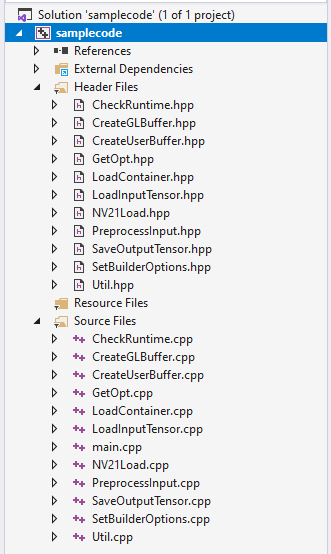
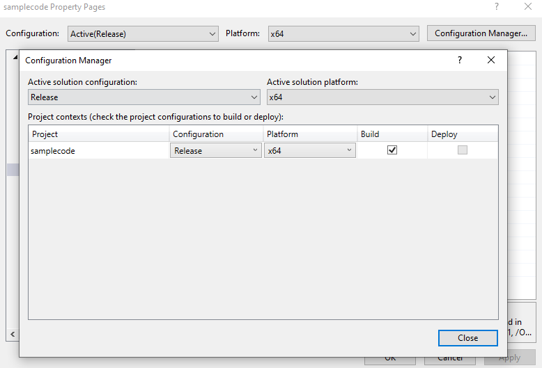
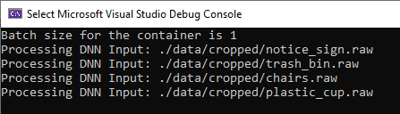

Windows Tutorial¶
Prerequisites¶
Reference the C++ Tutorial and C Tutorial for more detail
Prepare the input data and dlc from Running the Inception v3 Model in Windows
Note
$SNPE_ROOT is the full path to Qualcomm® Neural Processing SDK
C Sample Code Location: $SNPE_ROOT/examples/SNPE/NativeCpp/SampleCode_CAPI_Windows
C++ Sample Code Location: $SNPE_ROOT/examples/SNPE/NativeCpp/SampleCode_Windows
Introduction¶
This tutorial demonstrates how to build a C++ sample application that can execute neural network models on the Windows PC or Windows device.The steps for building and executing the CAPI sample are the same. Simply replace SampleCode_Windows with SampleCode_CAPI_Windows.Note
While this sample code does not do any error checking, it is strongly recommended that users check for errors when using the Qualcomm® Neural Processing SDK APIs.
Limitations on Windows¶
The Qualcomm® Neural Processing SDK DLL is built with the multithreaded, static version of the runtime library (/MT), but also specifies to use the dynamic version of libucrt.
Furthermore, because it passes STL objects across the DLL boundary, the user’s code cannot be built with Debug runtime (/MTd)
Setup Visual Studio¶
Tested Build Environment:
Visual Studio 2022 17.4
MSVC v143 C++ x86 build tools - 14.34
MSVC v143 ARM64 build tools - 14.34
Windows SDK 10.0.22621.0
There are several steps to setup the project.
Note
$SNPE_ROOT is the full path to Qualcomm® Neural Processing SDK, need to register a system environment variable to use it in VS directly.

Create an empty project
Unzip the SDK
Add all .cpp and .hpp files in
$SNPE_ROOT/examples/SNPE/NativeCpp/SampleCode_Windowsto Source Files and Header Files in Solution Explorer, respectively.
Right click on Solution -> Properties, Change the configuration to Release/x64
Go to Properties -> Configuration Manager and change all active configurations to Release/x64
Also Add ARM64 configuration to build the executable for ARM64
{kind=link}
{kind=link}
Link with SNPE.dll¶
Go to Properties -> C/C++ -> Additional Include Directory, edit and add include path: $SNPE_ROOT/include/SNPE
Go to Properties -> Linker -> Input -> Additional Dependencies, edit and add SNPE.lib
- Go to Properties -> Linker -> General -> Additional Library Directory, edit and add path to SNPE.dll:
For x64, add $SNPE_ROOT/lib/x86_64-windows-msvc
For ARM64, add $SNPE_ROOT/lib/aarch64-windows-msvc
Note
$SNPE_ROOT can be replaced to the full path to SDK
Using CMake to Build SampleCode¶
We also provide another way that using CMake to build SampleCode
Note
Need to install “CMake Tools for Windows”
Replace $SNPE_ROOT to full path if SNPE_ROOT is not in the system environment variables
Unzip the SDK
Open the developer command prompt for VS
Follow the instructions below
cd $SNPE_ROOT/examples/SNPE/NativeCpp/SampleCode_Windows
mkdir build & cd build
cmake ../ -A <x64, ARM64> [-DBUILD_WITH_VCRUNTIME=ON]
-A: x64 or ARM64, choose the platform you want to build
-DBUILD_WITH_VCRUNTIME: Default OFF. Turning ON will build snpe-sample with Microsoft MSVC static runtime libraries
cmake -\-build ./ -\-config Release (or open the .sln in Visual Studio and build)
Build and run a network in Visual Studio on x64¶
Taking Inception_v3 as an example:

Skip this if build by CMake, Go to Properties -> Build Events -> Post-Build Event, edit and add copy /Y “$SNPE_ROOT/lib/x86_64-windows-msvc” “$(OutDir)”
Go to Properties -> Debugging -> Command Argument, edit and add command arguments:
Set Commandline Arguments to:
--container path/to/inception_v3/dlc/inception_v3.dlc --input_list path/to/inception_v3/data/cropped/raw_list.txt --output_dir output/Set Working Directory to path/to/inception_v3
Click the Local Windows Debugger and observe the output which should resemble the following:
{kind=link}
Build and run a network on ARM64¶
Again taking Inception_v3 as an example:
Build the exe with ARM64 configuration
Copy executable file, SNPE.dll and inception_v3 directory to the device
Setup DSP Runtime: please refer to Running on Windows using DSP Runtime
Open the cmd and type:
$(EXE NAME) --container path/to/inception_v3/dlc/inception_v3.dlc --input_list path/to/inception_v3/data/cropped/raw_list.txt --output_dir output [--runtime dsp]
- If “VCRUNTIME140.dll was not found” or any error like “the application was unable to start” occurs, it can be fixed either by:
Install Microsoft Visual C++ Redistributable on the device
Refer to Using CMake to Build SampleCode to build snpe-sample with static VCRuntime libraries
When executing snpe-sample in powershell, it will not display any error for VCRUNTIME issues. If snpe-sample quits without any message, check above VCRUNTIME solutions.